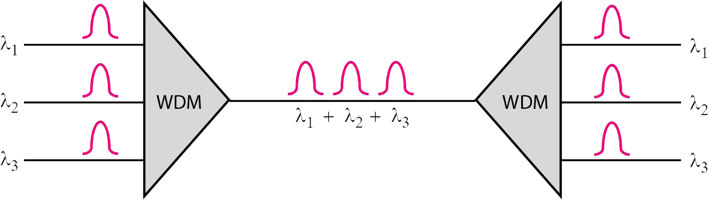

Definición
Multiplexación por division de tiempo
La multiplexación por división de tiempo es un proceso digital que permite a varias conexiones compartir el gran ancho de banda de un canal. En lugar de compartir una porción de ancho de banda como en FDM, se comparte el tiempo. Cada conexión ocupa un porción del tiempo en el enlace.
Figura 10. Multiplexación por división de longitud onda.

Características
- Se utiliza con modulaciones digitales.
- Tecnología simple y muy probada e implementada.
- Adecuada para la conmutación de paquetes.
- Requiere una sincronización estricta entre emisor y receptor.
- Requiere el Time avance.
Ventajas y desventajas
Ventajas de TDM
- Esto usa unos enlaces solos
- Esto no requiere al portador preciso que empareja a ambo final de los enlaces.
- El uso de la capacidad es alto.
- Cada uno para ampliar el número de usuarios en un sistema en un coste bajo.
- No hay ninguna necesidad de incluir la identificación de la corriente de tráfico en cada paquete.
Desventajas de TDM
- La sensibilidad frente a otro problema de usuario es alta
- El coste inicial es alto
- La complejidad técnica es más
- El problema del ruido para la comunicación análoga tiene el mayor efecto.